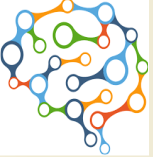

Objectif du projet

L'objectif principal de ce projet est de développer et de
mettre en œuvre une plateforme de simulation avancée,
spécifiquement conçue pour illustrer de manière détaillée les
principes fondamentaux et les mécanismes sous-jacents de l'intelligence artificielle. Cette initiative vise principalement
à fournir une ressource pédagogique pour ceux qui sont intéressés par l'apprentissage et la compréhension de l'intelligence artificielle,
en particulier pour les débutants ou les individus sans expérience préalable dans ce domaine.
Création
Le projet envisage de créer un environnement de simulation interactif et intuitif, où les utilisateurs peuvent observer et manipuler les processus de l'IA en temps réel. Cette plateforme englobera diverses techniques et solutions typiques de l'IA, telles que l'algorithme de recherche de chemin A*, les réseaux de neurones, les systèmes d'apprentissage automatique, et d'autres approches algorithmiques. Chacune de ces techniques sera présentée de manière à faciliter la compréhension des concepts complexes, en utilisant des visualisations graphiques, des exemples interactifs, et des explications détaillées.
Modules et ressources
En plus de la simulation, le projet inclura également des modules éducatifs et des ressources d'apprentissage. Ces ressources seront conçues pour guider les utilisateurs à travers les différents aspects de l'intelligence artificielle, en fournissant des contextes théoriques, des études de cas, et des exercices pratiques. L'objectif est de rendre l'apprentissage de l'IA accessible, engageant et enrichissant pour un large éventail de publics, des étudiants aux professionnels, en passant par les amateurs de technologie.
Résultats attendus
En résumé, ce projet aspire à devenir une plateforme complète pour l'exploration et l'éducation en intelligence artificielle, en bridant le fossé entre les concepts théoriques et leur application pratique, et en permettant aux gens de tous horizons de découvrir et de comprendre les merveilles et les défis de l'IA.
Difficulté du projet :
- Moteur : 3/5
- IHM graphique : 3/5
- Algorithme : 4/5
- Intelligence: 5/5